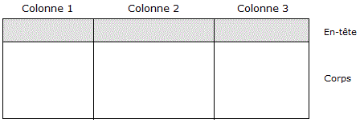
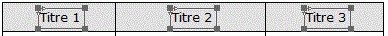
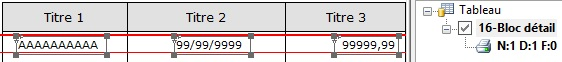
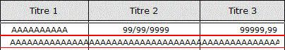

Un tableau est constitué de lignes et de colonnes et il est divisé en deux zones, l'en-tête et le corps, qu'il est important de bien distinguer :

L'en-tête du tableau.
Cette zone contient habituellement les titres des colonnes du tableau. Mais contrairement aux tableaux des masques d'écran, le titre d'une colonne n'est pas une de ses propriétés. Pour affecter un titre à une colonne, il faut créer un objet (par exemple un objet Texte) et le déposer à l'intérieur de la zone délimitant l'en-tête :

Le corps du tableau.
Le corps est la zone du tableau où vont s'imprimer les lignes qui le constituent.
On n'y déclare pas directement les données. En effet, le contenu du corps du tableau est en réalité constitué d'un ou plusieurs blocs (au sens habituel), qui doivent d'abord être insérés dans le tableau (voir la rubrique Etapes de la création d'un tableau).
Une fois le bloc inséré :
Il devient possible d'y placer des objets (en restant en édition du bloc contenant l'objet Tableau).
Il devient visible dans l'arbre des tableaux du bloc.

Les colonnes du tableau.
Le découpage du tableau en colonnes décide de sa présentation. Mais contrairement à leurs homologues dans les tableaux des masques d'écran, les colonnes ne délimitent pas les objets qu'elles contiennent de manière figée : un objet peut en effet déborder d'une colonne, être à cheval sur deux colonnes ou s'étendre sur plusieurs colonnes. Ceci permet de faire figurer des blocs de contenus hétérogènes dans un même tableau (cas de nombreux états imprimés par l'ERP Divalto).
Par exemple :

Automatique (valeur par défaut) :
La position de l'objet détermine automatiquement la colonne à laquelle il appartient, s'il est entièrement inclus dans cette colonne.
Numéro d'une colonne :
L'objet est considéré comme appartenant à cette colonne, quelque soit sa largeur et sa position dans le tableau.
Aucune :
L'objet n'appartient à aucune colonne précise.
Dans Xwin et dans l'assistant de personnalisation des impressions, cette propriété détermine la manière de considérer la colonne et les objets qui lui appartiennent, lors de certaines manipulations sur les colonnes du tableau. Par exemple :
Xwin n'autorise pas de réduire la largeur d'une colonne en dessous d'un certain seuil, dépendant de la taille des objets lui appartenant.
Un objet peut être automatiquement déplacé pour "suivre" sa colonne.
Un objet à cheval sur les colonnes C1,C2,... est déplacé lorsque la largeur de la colonne A est modifiée, sauf s'il appartient explicitement à la colonne C1.
La suppression d'une colonne ne supprime pas un objet qui ne lui appartient pas, même s'il est entièrement inclus dans cette colonne.
La valeur Aucune permet d'assurer que l'objet sera toujours imprimé, même si l'utilisateur de l'assistant de personnalisation masque la colonne qui le contient.
Conseil :
Afin d'éviter des effets indésirables lors des manipulations sur les colonnes du tableau, pensez à figer la colonne d'appartenance des objets qui ne sont pas clairement situés à l'intérieur d'une colonne précise (objets à cheval sur plusieurs colonnes) ou qui n'appartiennent pas réellement à la colonne où ils sont placés (tableau à blocs hétérogènes).
Les blocs de type Tableau.
La propriété Type de bloc des blocs insérés dans un tableau prend la valeur Tableau. Un bloc de ce type s'apparente à un bloc de type Mobile, avec quelques particularités :
Un même bloc ne peut pas appartenir à plusieurs tableaux.
L'imbrication de tableaux n'étant pas autorisée, il est interdit d'insérer dans un tableau un bloc contenant lui-même un tableau.
Son type ne peut plus être changé dans la boîte des caractéristiques du bloc, à moins de retirer le bloc du tableau (commande accessible depuis l'arbre des tableaux du bloc).
Ses bornes d'impression (paramètres Positions début et fin) deviennent relatives au corps du tableau (et non plus relatives à la page).
Voir la rubrique Positionnement des blocs et l'exemple Inclure un tableau dans un masque existant.
A l'exécution, le mécanisme employé par l'exécuteur de masques d'impression Ymig pour imprimer les blocs Tableau à l'intérieur du corps du tableau est en tout point similaire à celui employé pour imprimer les blocs Mobiles à l'intérieur de la page. Simplement :
Le débordement d'un bloc Tableau est détecté lorsque la place devient insuffisante pour son impression dans le corps du tableau et non plus lorsque la place manque pour son impression dans la page (l'intervalle [Position début...Position fin] qui délimite la zone où le bloc est autorisé à s'imprimer est maintenant relatif au corps du tableau).
Un bloc Tableau ne doit pas être imprimé sans impression préalable du bloc contenant le tableau.
Dans le cas contraire, l'erreur "L'impression du bloc Tableau numéro NN doit être précédée de celle du tableau correspondant" est signalée au développeur, si le programme est lancée depuis Xwin. En exploitation, cette erreur n'est pas explicitement signalée ; le bloc de type Tableau est traité comme un bloc de type Mobile et, bien entendu, l'état imprimé ne sera pas correct.
Voir aussi :
Propriétés des colonnes de tableau spécifiques à l'assistant
Propriétés des blocs de type Tableau spécifiques à l'assistant